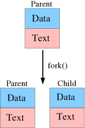
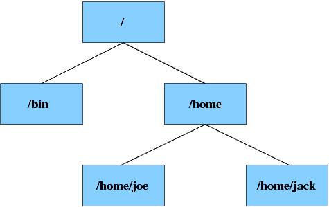

Эта глава является введением в некоторые основные концепции UNIX и GNU/Linux. Очень важно прочитать эту главу, если у вас нет достаточного опыта использования этих систем. Многие раскрытые здесь положения используются далее в этой книге.
4.1. Многозадачность
4.1.1. Введение
Многозадачность — одна из самых известных сильных сторон UNIX. Многозадачность означает, что множество программ могут выполняться одновременно. Вы можете удивиться важности этого, т.к. большинство людей работают только с одной программой единовременно, но мультизадачность совершенно необходима UNIX-подобным системам. Даже если вы не запускали каких-либо приложений, в фоне всегда работают какие-то программы, называемые процессами-демонами (daemon processes, их не стоит путать с demon'ами; слово daemon отсылает к сверхъестественным сущностям греческой мифологии).
4.1.2. Процессы и потоки
После загрузки программы с физического носителя, запускается экземпляр этой программы, который называется процессом. Процессу отводится собственный защищённый участок оперативной памяти — адресное пространство. В адресном пространстве процесса имеется два важных сегмента: область текста и область данных. Область текста занимает программный код; он используется для того, чтобы сообщить системе, что нужно делать. Область данных используется для сохранения постоянных данных и данных времени выполнения. Операционная система выделяет процессорное время для выполнения процессов. На однопроцессорной системе процессы не могут работать по-настоящему одновременно, в таком случае ими управляет планировщик ядра, который распределяет процессорное время между процессами, что и создаёт иллюзию одновременной работы программ. Такие процессы называются процессами, работающими в режиме разделения времени. На системах, имеющих в распоряжении более одного центрального процессора или несколько ядер, процессы могут выполняться одновременно, но и в этом случае используется режим разделения времени, чтобы распределять доступное процессорное время.
Новые процессы создаются путём копирования запущенных процессов с помощью системного вызова fork. Изображение ниже схематично показывает работу вызова fork(). Родительский процесс инициирует fork(), ядро отвечает на этот вызов дублированием процесса; такие процессы называются родительским и дочерним (или потомком) соответственно.
Изображение 4.1. Создание копии процесса

Копирование процессов может использоваться для создания двух процессов, которые могут выполняться одновременно. Но обычно это не лучшее решение, т.к. оба процесса будут использовать одно адресное пространство. Копирование содержимого пространства памяти занимает относительно долгое время, и сложно разделить данные между двумя процессами. Эта проблема решается в подходе, называемом многопоточностью. Многопоточность означает, что множество экземпляров текстовой области могут быть запущены в одно время с доступом к одной области данных. Такие экземпляры, называемые потоками, могут выполняться параллельно на нескольких процессорах.
4.2. Иерархия файловой системы
4.2.1. Структура
Операционная система хранит данные в файловой системе. Файловая система
представляет собой древовидную структуру директорий, содержащих файлы, такие как
саму ОС, программы и пользовательские данные. Также большинство файловых систем
способны сохранять различные метаданные с информацией о файлах и директориях, к
примеру, права доступа и время изменения. В GNU/Linux имеется только одна
иерархия файловой системы; это означает, что в GNU/Linux нет "букв дисков" (A:,
C:, D:) для различных файловых систем, как в DOS и Windows. Файловая система
выглядит как дерево с корневой директорией (у которой нет родительской
директории), ветвями и листьями (директориями без поддиректорий). Корень
файловой системы обозначается знаком «/». Директории
разделяются этим же знаком.
Изображение 4.2. Иерархия файловой системы

Иллюстрация 4.2., приведённая выше, показывает структуру файловой системы.
Вы можете увидеть, что у корневой директории / две поддиректории:
bin и home. Директория home имеет две
дочерние директории, joe и jack. Диаграмма показывает
полные пути к каждой директории. Те же правила наименования действуют и для
файлов. Допустим, что в директории /home/jack имеется файл
memo.txt, тогда полный путь к файлу будет
/home/jack/memo.txt.
У каждой директории есть две специальных сущности, «.» и
«..». Первая ссылается на саму директорию, а вторая — на
родительский каталог. Эти записи могут использоваться для создания относительных
путей. Так, если вы работаете в директории jack, вы можете
обратиться к директории /home/joe как к ../joe.
4.2.2. Монтирование
У вас может возникнуть вопрос, как возможно получить доступ к другим устройствам или разделом, имеющим свою корневую файловую систему. Linux использует подобный принятому в UNIX подход для подключения других файловых систем. Linux позволяет системному администратору подключить устройство к любой директории файловой структуры. Этот процесс называется монтированием (mounting). Например, можно подключить CD-ROM к директории/cdrom. Если монтирование прошло
успешно, файлы с CD-ROM будут доступны в этой директории. Монтирование детально
рассмотрено в разделе 8.8. Подключение файловых
систем.
4.2.3. Основные директории
Группа стандартизирования иерархии файловой системы выпустила стандарт, описывающий, какие директории должны быть доступны в системе GNU/Linux. В настоящее время большинство крупных дистрибутивов используют рекомендации Стандарта иерархии файловой системы (FHS). Этот параграф описывает основные директории файловой иерархии GNU/Linux.
Заметьте, что в GNU/Linux нет отдельных директорий для программ (как в Windows).
Вместо этого файлы упорядочены по типам и выполняемым функциям. Например,
исполнимые файлы основных пользовательских приложений хранятся в директории
/usr/bin, а их библиотеки в /usr/lib. Это краткий
обзор наиболее важных директорий Slackware Linux:
- /bin: важнейшие исполнимые файлы, которые должны быть доступны, даже если не подключена директория
/usr. - /dev: файлы устройств. Это специальные файлы, используемые для доступа к устройствам.
- /etc содержит все важные конфигурационные файлы.
- /home содержит домашние директории отдельных пользователей.
- /lib: важнейшие системные библиотеки (вроде glibc) и модули ядра.
- /root: домашняя директория суперпользователя (root).
- /sbin: важнейшие исполнимые файлы, используемые в администрировании системы.
- /tmp: директория для временных файлов, доступная на запись всем пользователям.
- /usr/bin хранит большую часть пользовательских двоичных файлов.
- /usr/lib: библиотеки, которые не требуются для загрузки системы.
- /usr/sbin: не необходимые программы для системного администрирования.
- /var: изменяемые данные, например, файлы журналов.
4.3. Устройства
4.3.1. Введение
В GNU/Linux всё представлено в виде файлов, включая и устройства. В каждой
системе GNU/Linux есть директория со специальными файлами, называющаяся
/dev. Каждый файл в директории /dev представляет
устройства или псевдо-устройства. С каждым файлом устройств ассоциировано два
специальных номера — старший и младший номера устройства; по ним ядро ОС
определяет соответствие файла физическому устройству. Следующий пример
показывает номера устройства для специального файла /dev/zero:
- $ file /dev/zero
- /dev/zero: character special (1/5)
Команда file может быть использована для определения типа файла. Этот особенный файл распознаётся как файл устройства, старший номер которого равен 1, а младший – 5.
Если вы установили пакет с исходным кодом ядра, вы можете найти
всеобъемлющий список всех главных устройств с соответсвующими им номерами в
файле /usr/src/linux/Documentation/devices.txt. Обновлённую версию
этого списка также можно получить в интернете:
ftp://ftp.kernel.org/pub/linux/docs/device-list/.
Ядро Linux управляет двумя типами устройств: симвльными и блочными. Символьные устройства могут быть прочитаны побайтово, блочные же устройства считываются поблочно (например, по 4096 байт за один раз). Является ли устройство символьным или блочным определяется по его характеру. Например, большинство накопителей – блочные устройства, а большинство устройств ввода – символьные. У блочных устройств есть одно отличительное преимущество, а именно возможность кэширования. Это означает, что прочитанные или записанные блоки могут быть сохранены в специальной области системной памяти – кэше. Память более быстрая, чем большинство носителей, поэтому с помощью оперирования блоками информации в памяти можно довольно сильно увеличить быстродействие. Конечно, в конечном счёте изменения будут записаны на накопитель, чтобы отразить изменения, произошедшие в кэше.
4.3.2. Устройства ATA и SCSI
Мы подробно остановимся на двух типах блочных устройств, т.к. понимание правил наименования этих устройств является ключевым для разметки и управления жёстким диском. Почти все современные компьютеры для архитектуры x86 используют жёсткие диски ATA и приводы CD-ROM. Под Linux эти устройства именуются следующим образом:
/dev/hda - master-устройство на первом канале ATA /dev/hdb - slave-устройство на первом канале ATA /dev/hdc - master-устройство на втором канале ATA /dev/hdd - slave-устройство на втором канале ATA
На большинстве компьютеров с одним жёстким диском, это master-устройство,
подключенное к первому ATA-каналу (/dev/hda). Разделы жёсткого
диска именуются путём добавления номера к имени файла устройства. Например,
/dev/hda1 – это первый раздел на диске, представленном файлом
/dev/hda.
Имена устройств жёстких дисков SCSI и приводов CD-ROM следуют другому соглашению. SCSI-диски не часто используются в компьютерах нижнего ценового сегмента, но USB-накопители и SATA-устройства выглядят как SCSI-диски. Для них используется следующее представление:
/dev/sda - Первый SCSI диск /dev/sdb - Второй SCSI диск /dev/sdc - Третий SCSI диск /dev/scd0 - Первый CD-ROM /dev/scd1 - Второй CD-ROM /dev/scd2 - Третий CD-ROM
Разделы именуются по тому же принципу, что и в случае ATA-дисков;
/dev/sda1 – это первый раздел первого SCSI-диска.
Если вы используете программную реализацию RAID в ядре Linux, RAID-том будет
доступен как /dev/mdn, где n – это номер тома, начиная
с 0.